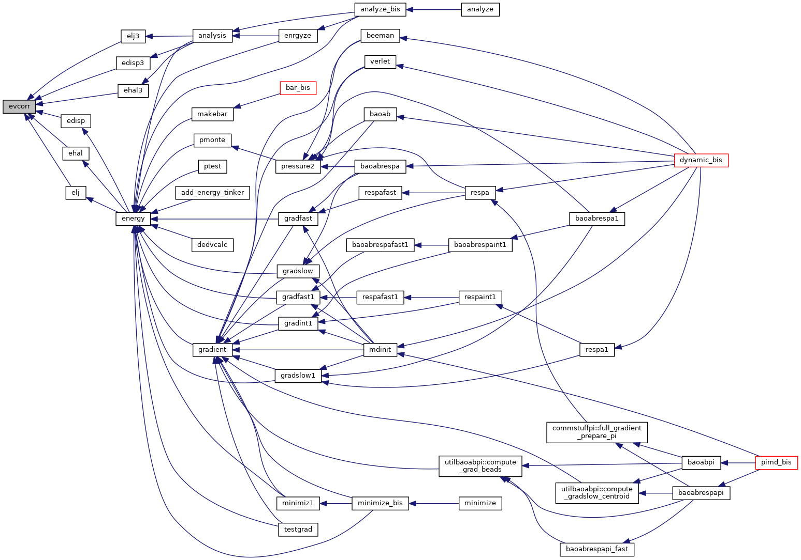
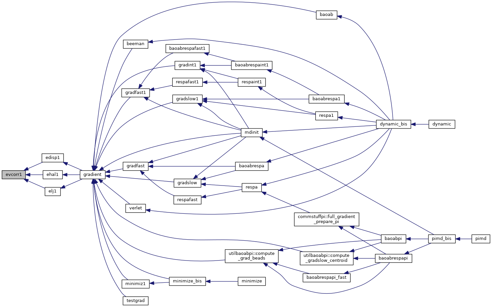

|
Tinker-HP v1.3
|
|
Tinker-HP v1.3
|
Go to the source code of this file.
Functions/Subroutines | |
| subroutine | evcorr (mode, elrc) |
| computes the long range van der Waals correction to the energy via numerical integration More... | |
| subroutine | evcorr1 (mode, elrc, vlrc) |
| computes the long range van der Waals correction to the energy and virial via numerical integration More... | |
| subroutine evcorr | ( | character*11 | mode, |
| real*8 | elrc | ||
| ) |
computes the long range van der Waals correction to the energy via numerical integration
| no | params |
Definition at line 26 of file evcorr.f90.
References switch().
Referenced by edisp(), edisp3(), ehal(), ehal3(), elj(), and elj3().

| subroutine evcorr1 | ( | character*11 | mode, |
| real*8 | elrc, | ||
| real*8 | vlrc | ||
| ) |
computes the long range van der Waals correction to the energy and virial via numerical integration
| no | params |
Definition at line 206 of file evcorr.f90.
References switch().
Referenced by edisp1(), ehal1(), and elj1().

 1.8.5
1.8.5